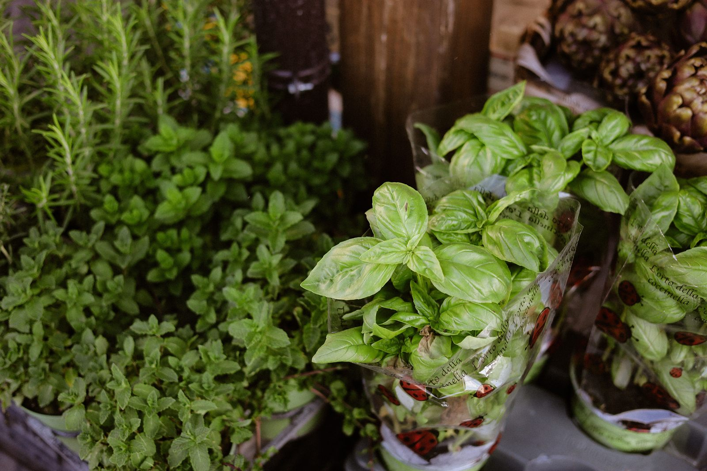

You do not need a fancy setup or rare roots from across the world to practice magic. Some of the best tools are sitting right in your kitchen cabinets. For hundreds of years, everyday people have used basic cooking herbs and spices not just to make food taste good, but to bring luck, protection, and calm into their homes.
Every herb has its own mood and old folk meaning. When you cook, make tea, or mix spices with a clear goal in mind, your kitchen becomes a place for simple, everyday magic.
6 Easy Herbs Already in Your Kitchen
If you want to try kitchen magic, start with these common basics:
Rosemary
Protection · Cleansing · Clear Head
Rosemary is the best all-around herb to keep on hand. If a spell asks for an herb you do not have, you can almost always use rosemary instead. Burn a dry piece to clear bad energy out of a room, or keep some on your desk to help you focus.
Basil
Money · Love · Peace at Home
Basil is known for bringing in money and keeping the peace at home. Put a dry basil leaf in your wallet to attract cash, or add fresh basil to dinner when you want a calm, loving mood at the table.
Cinnamon
Money · Fast Results · Passion
Cinnamon acts like a speed boost for your goals. Whenever you want something to happen faster, add a little cinnamon. Stir a pinch into your morning coffee while picturing your money goals, or blow a small pinch through your front door on the first day of the month to welcome good luck.
Bay Leaves
Wishes · Success
Bay leaves are the classic tool for quick wish spells. Write one word or a short wish right on a whole dry bay leaf with a pen, then safely burn it in a fire-safe bowl to send your wish out.
Thyme
Bravery · Healing · Calm
People have carried thyme in their pockets for centuries to feel brave before a big talk or a tough day. Drop some into a warm bath to wash off stress, or keep a small bag of dry thyme near your pillow to keep bad dreams away.
Black Pepper & Garlic
Strong Protection
Both of these kitchen basics act like a wall against bad vibes. Black pepper helps push away bad energy and stop mean gossip, while garlic has been used for generations, especially in Romanian folklore, to block the evil eye and keep your energy safe.
3 Simple Ways to Use Them
You do not need a long ritual to use these herbs. Just work them into things you already do:
Stir with a Goal
When you stir your tea, soup, or sauce, pay attention to the way your spoon moves. Stir clockwise to bring good things in (money, love, luck) and counterclockwise to push bad things away (stress, bad habits, worries).
Make a Stovetop Pot
Fill a pot with water, drop in a few herbs that match your goal, like cinnamon sticks and orange peels for money, or rosemary and lemon for a fresh start, and let it simmer on low heat so the smell fills your home.
Dress a Candle
Rub a tiny drop of cooking oil onto a small candle, roll it lightly in crushed dry herbs, and light it while thinking about your goal. (Keep the herbs thin so they do not flare up, and never leave a burning candle alone.)
Sources & Further Reading
- Saged Shop: “Magical Herbs Guide — 20 Witchy Herbs and Their Uses”
- Goddess Elite: “The Magical Properties of Common Kitchen Herbs”
- Wicca Academy: “Kitchen Magick for Beginners”
- Crystal Aura Gaze: “Kitchen Witch Tips — Herbs & Spices Cheat Sheet”